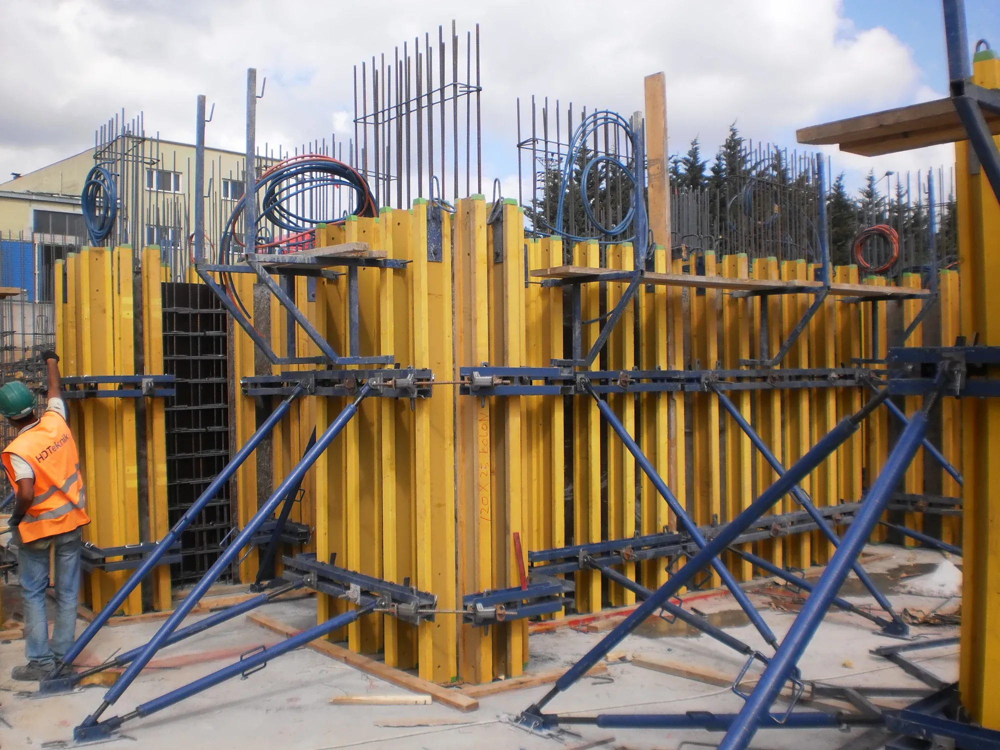
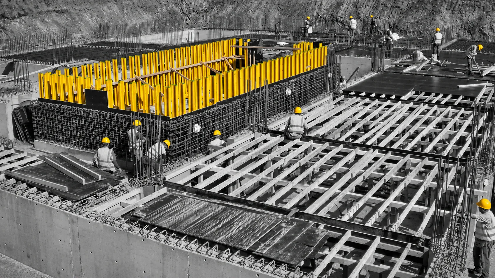
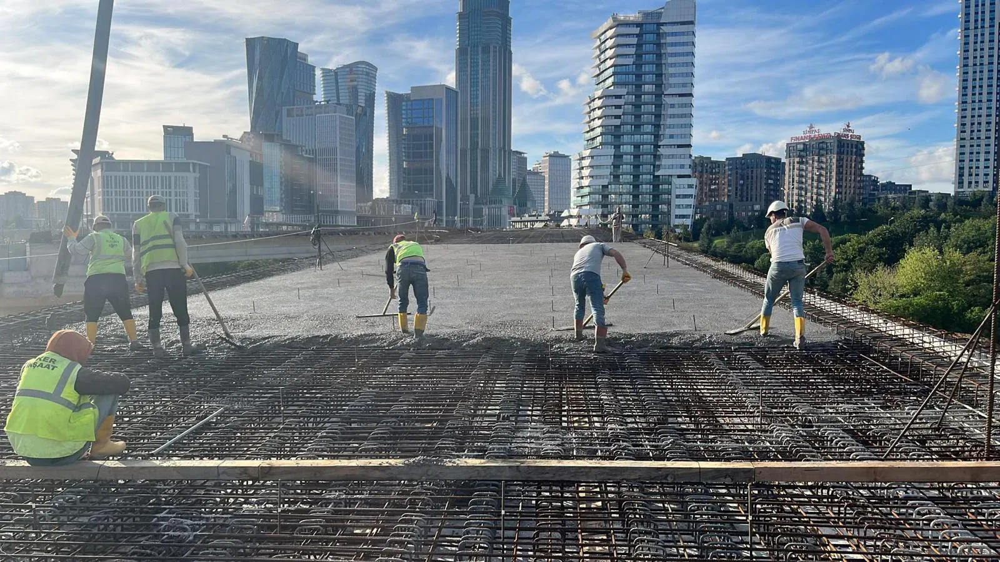
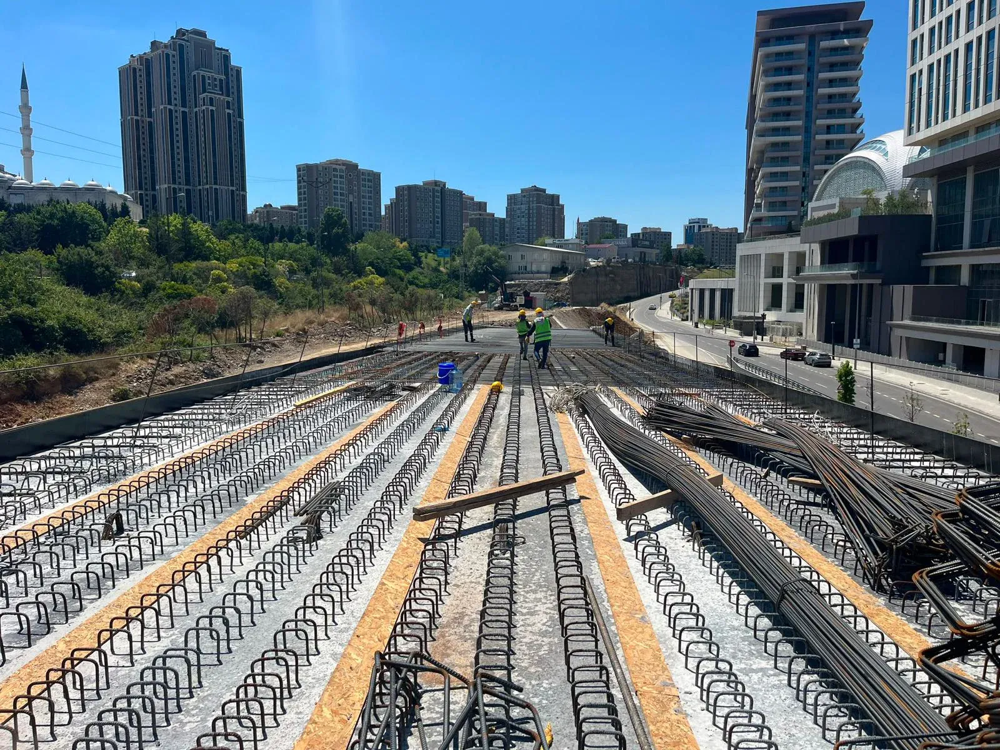
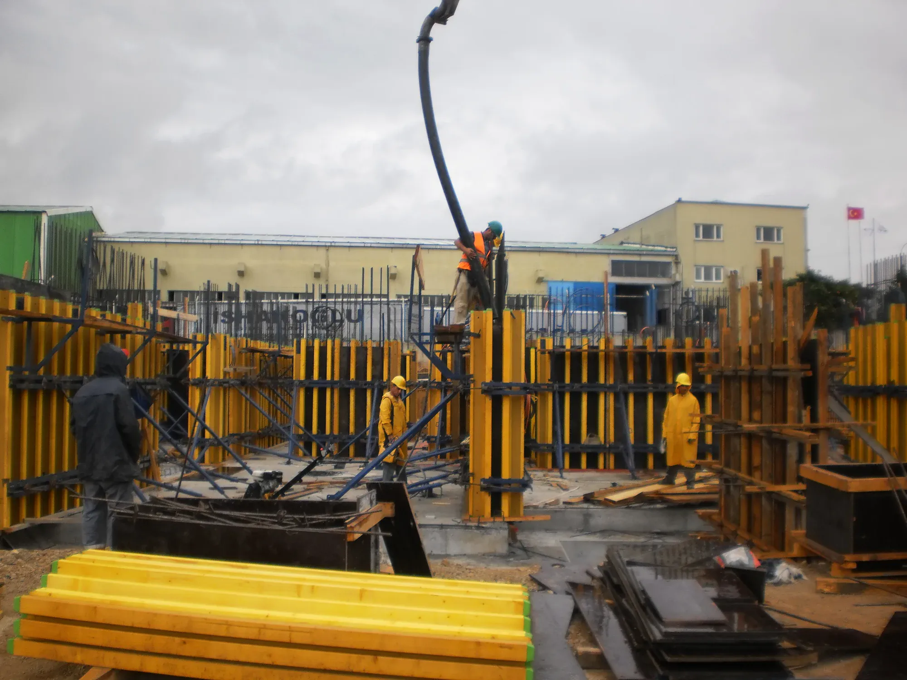
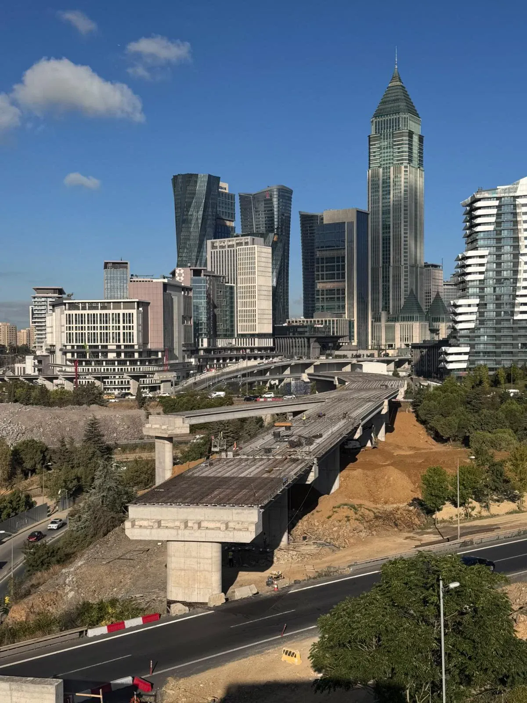
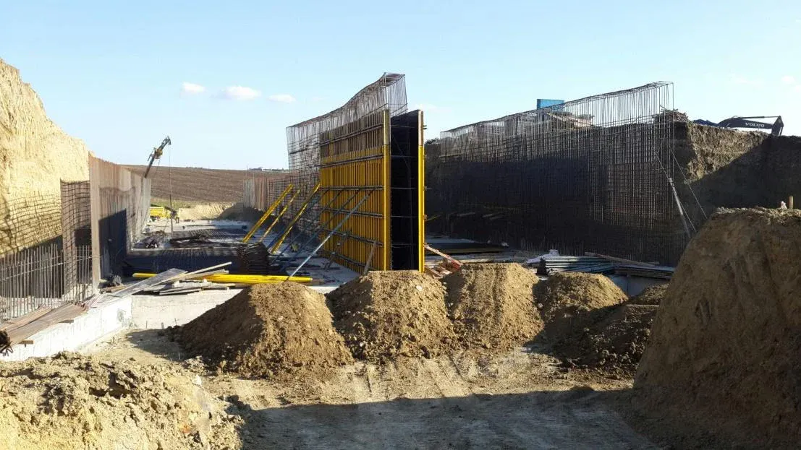
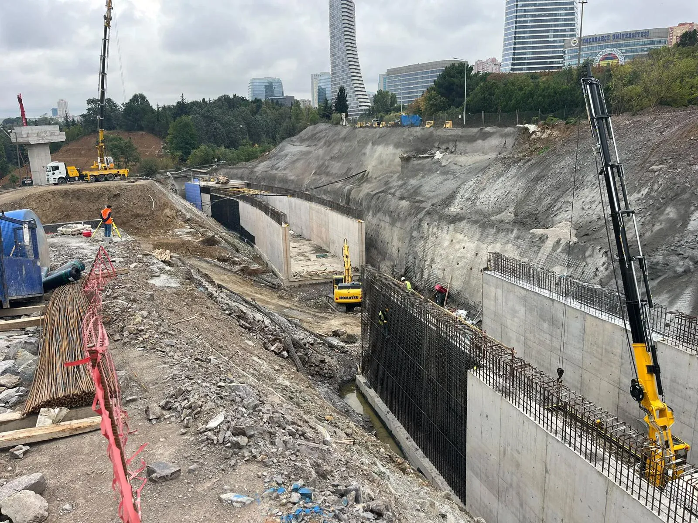
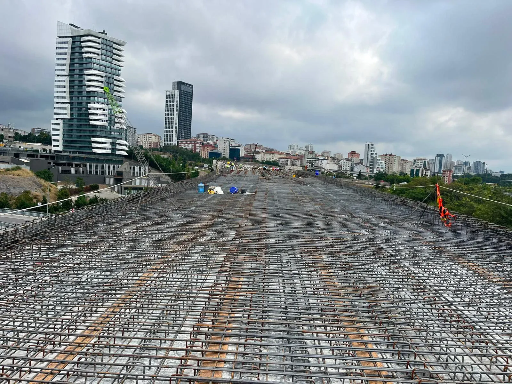

Kalıp ve taşıyıcı iskele
Perde, kolon, döşeme ve köprü ayağı kalıpları; tırmanır sistemler ve taşıyıcı iskele. Kalıp planını döküm sırasına göre biz çıkarırız.

Betonarme kaba yapı alt yüklenicisi · Buldan, Denizli
Ana yüklenicinin üstlendiği işte kalıp, donatı ve beton imalatını kendi ekibimiz ve ekipmanımızla uyguluyoruz. Sahada tek muhatap, yazılı program, ölçülen imalat.
Kurucu kadronun yürüttüğü projelerin toplam metrajı.
Çalışma modeli
İşveren→Ana yüklenici→Akağaç
İşi ana yüklenici alır. Biz taşıyıcı sistemin kalıp, donatı ve beton imalatını üstleniriz: ekip, ekipman ve saha yönetimi bizden; program ve kalite hedefi ana yükleniciyle ortak.

Kaba yapının takvimi, işin geri kalanının takvimini belirler. Üç imalatı aynı ekipte toplamamızın nedeni bu.

Perde, kolon, döşeme ve köprü ayağı kalıpları; tırmanır sistemler ve taşıyıcı iskele. Kalıp planını döküm sırasına göre biz çıkarırız.

Kesim-büküm listesi, sahada işleme ve montaj. Paspayı, bindirme ve filiz kontrolleri dökümden önce tutanağa bağlanır.

Pompa ve mikser koordinasyonu, vibrasyon, yüzey bitişi ve kür. Her dökümün numunesi ve kaydı tutulur.

İstanbul, Ataşehir · 40.000 m³ beton · 7.000 t donatı
Kalite ve iş sağlığı
Bu yüzden kontrol dökümden önce yapılır. Sahadaki her ekip başı aynı listeyle çalışır.

Kurumsal

Akağaç İnşaat, betonarme taşıyıcı sistemlerin kalıp, donatı ve beton imalatını üstlenen bir alt yüklenicidir.
Bir binanın ya da köprünün takvimi, kaba yapının ne kadar düzenli ilerlediğine bağlıdır. Ana yüklenici ince işleri, tesisatı ve teslimi planlarken taşıyıcı sistemin zamanında ve ölçüsünde yükselmesine güvenir. Biz o güveni veren tarafız.
Kurucu kadromuz otuz yılı aşkın sürede viyadük, sanayi tesisi, arıtma tesisi, konut ve idari binalarda kaba yapı imalatı yürüttü. Akağaç bu birikimin yeni çatısıdır: aynı ustalar, aynı yöntem, daha sade bir yapı.
Ana yüklenicinin kaba yapı riskini üstlenmek; ölçülebilir, programlı ve güvenli imalatla işi teslim etmek.
Kalıp, donatı ve betonu tek ekipte toplayarak sahada koordinasyon kaybını ortadan kaldırmak.
Büyük ölçekli altyapı ve sanayi projelerinde ana yüklenicilerin ilk aradığı kaba yapı ortağı olmak.
Hizmetler
Fabrika, depo ve üretim tesislerinde temel, perde, kolon ve ağır döşemeler.
İş merkezi, otel ve karma kullanımlı yapılarda kat döngüsüne bağlı imalat.
Toplu konut, yurt ve spor yapılarında tünel kalıp ve konvansiyonel sistemler.
Ayak, başlık ve tabliye imalatı; tırmanır kalıp ve taşıyıcı iskele.
Menfez, istinat duvarı, alt geçit ve otoyol sanat yapıları.
Arıtma havuzları, su yapıları ve enerji tesislerinde sızdırmaz betonarme.

Finans Merkezi otoyol bağlantılarında bugün sahada olan ekip ve ekipman.
Projeler
| Proje | Yıl | Kalıp m² | Beton m³ | Donatı t |
|---|
Metrajı açıklanabilen projeler; boş hücreler paylaşılmamıştır.
İletişim
Teklif, iş başvurusu ya da tedarik için bize yazın. İki iş günü içinde dönüyoruz.